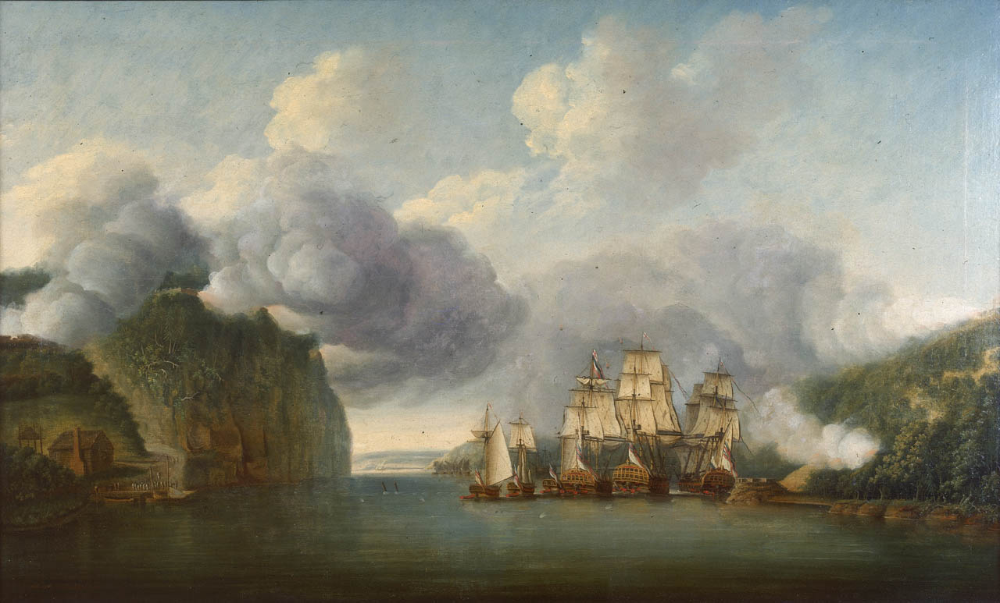
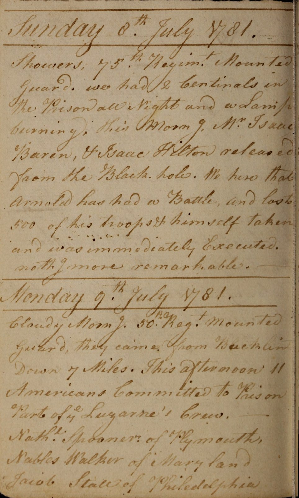
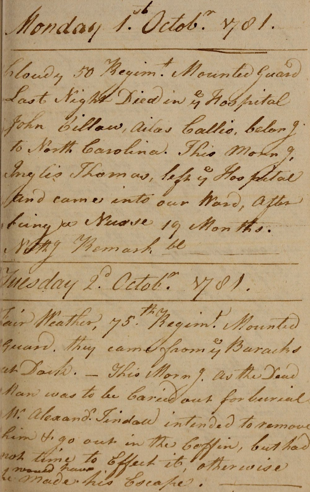

Aaron Tufts of Medford, a soldier at nineteen, went to sea in the last years of the war and did not come home. This page gathers what the records say about the Salem privateer Essex, her capture in 1781, and Mill Prison at Plymouth, England, where her crew were held.
Tufts association: Crew member and prisoner of war: Aaron Tufts (1761–1781) , son of William Tufts Jr.
, son of William Tufts Jr. of Medford. (Tufts Kinsmen, Vol. I, p. 177, no. 93-4)
of Medford. (Tufts Kinsmen, Vol. I, p. 177, no. 93-4)
The Ship
The Essex was a privately owned, ship-rigged vessel sailing out of Salem under a privateer’s commission, commanded by Capt. John Cathcart. A ship database records her as twenty guns and about 200 tons, acquired in 1780, with 150 men in April 1781 (“American Privateer ship ‘Essex’ (1780),” threedecks.org (a secondary database)). Where and when she was built is not recorded in the sources seen.

Roebuck with Phoenix and Tartar, Hudson River, 1776" loading="lazy">⚑ Unverified
Built 1779? A construction date of 1779 has been reported, but no builder’s or registry record has been seen; the database above gives only the year acquired, 1780. Note: Pending further work.
Cruise and Capture, 1781
Twelve of the crew were young men from Braintree and Milton, neighbours of John Adams. In their first letter to him from prison they wrote that they had left home on 22 April 1781. The editors of the Adams Papers summarise:
“All had been captured in June on board the Salem privateer Essex, Capt. John Cathcart, and committed to Mill Prison in July.”
“From Job Field and Others, 8 September 1781,” editorial note 1, Papers of John Adams, vol. 11. Massachusetts Historical Society
One of them, Thomas Vinton, named the captor in his own hand:
“I was taken the 10th of June Last by the Queen Charlotte Priveteer Belonging to London and was Striped of all my Cloaths And Left Nothing only what I had on.”
“Thomas Vinton to John Adams, 20 December 1781,” Papers of John Adams, vol. 12. Founders Online
An Irish study of American prisoners at Kinsale describes an engagement far west of the Fastnet light between the Queen Charlotte and four American privateers, after which the Queen Charlotte brought the Essex and her crew into Kinsale (“The American prisoners at Kinsale,” Journal of the Cork Historical and Archaeological Society (1989). PDF). It places the action in May 1781, a month earlier than Vinton’s date.
⚑ Unverified
Which captor? Some accounts say the Essex was captured by HMS Roebuck in 1780. The sources cited here (the Adams Papers, Vinton’s letter, the Kinsale study and the ship database) all name the London privateer Queen Charlotte and the year 1781. No record of a capture by Roebuck has been seen. Date: 10 June 1781 (Vinton; the database) against May 1781 (the Kinsale study).
Old Mill Prison, Plymouth
Mill Prison stood at Plymouth in Devon and held American seamen taken at sea throughout the war. Prisoners there depended on guards, the prison hospital and whatever money friends could send. The Braintree men wrote to John Adams in Paris for help; the editors count over twenty letters exchanged over the next twelve months, and Job Field, one of the signers, returned home in 1782 (“From Job Field and Others, 8 September 1781,” editorial note 1, Papers of John Adams, vol. 11. Massachusetts Historical Society).
William Russell, an American prisoner, kept a daily diary inside the prison. Two of its pages from 1781 are shown below with transcriptions.

Sunday 8th July 1781. Showers; 75th Regimt Mounted Guard. we had 2 Centinals in the Prison all Night and a Lamp burning, this Morng Mr Isaac Baren [?], & Isaac Hilton released from the Black-hole. We here that Arnold has had a Battle, and lost 500 of his troops & himself taken and was immediately Executed. nothing more remarkable.
Monday 9th July 1781. Cloudy Morng. 50th Regt Mounted Guard, they came from Bucklin [?] Down 7 Miles. This afternoon 11 Americans Committed to Prison Part of ye Luzarne’s Crew. …
Transcription from the page shown, William Russell, Diaries of cruise with privateer from Boston, capture, ordeals in Old Mill Prison at Plymouth, England, attempted escapes, and release (manuscript), Boston Public Library. Internet Archive. Bracketed queries mark uncertain readings. The rumour about Benedict Arnold was false.

Monday 1st Octobr 1781. Cloudy 50 Regimt Mounted Guard Last Night Died in ye Hospital John Tillow [?], alias Callis, belongg to North Carolina. This Morng Inglis Thomas, left ye Hospital and came into our Ward, After being ye Nurse 19 Months. Nothg Remarkable.
Tuesday 2d Octobr 1781. Fair Weather, 75th Regimt Mounted Guard. they came from ye Baracks at Dawn. — This Morng As the Dead Man was to be Caried out for burial Mr Alexandr Tindall intended to remove him & go out in the Coffin, but had not time to Effect it, otherwise he would have made his Escape.
Transcription from the page shown, William Russell, Diaries of cruise with privateer from Boston, capture, ordeals in Old Mill Prison at Plymouth, England, attempted escapes, and release (manuscript), Boston Public Library. Internet Archive. Bracketed queries mark uncertain readings.
Aaron Tufts’s Fate
Aaron Tufts was born in Medford on 18 December 1761. He served in the Continental Army from 1777 and again with Medford’s six-months men in 1780 (Massachusetts Soldiers and Sailors of the Revolutionary War, vol. XVI (1907), p. 131. Internet Archive). The family record then places him among the crew of the Essex:
was born in Medford on 18 December 1761. He served in the Continental Army from 1777 and again with Medford’s six-months men in 1780 (Massachusetts Soldiers and Sailors of the Revolutionary War, vol. XVI (1907), p. 131. Internet Archive). The family record then places him among the crew of the Essex:
“a member of the crew of the ship Essex that was captured by the British. He died in Old Mill Prison in England while a prisoner of war”
Tufts Kinsmen, Vol. I, p. 177, no. 93-4
“Probably Aaron, who died in Old Mill Prison, England, Sept. 18, 1781.”
Helen Tilden Wild, Medford in the Revolution (1903), p. 50. Internet Archive · page scan

He was nineteen. No grave or burial record for him in England has been found.
⚑ Unverified
Aaron’s name has not been seen on a crew list of the Essex or on a Mill Prison register; his place on the ship rests on Tufts Kinsmen, Vol. I, p. 177. Wild (p. 50) says only “probably.” Note: Pending further work.